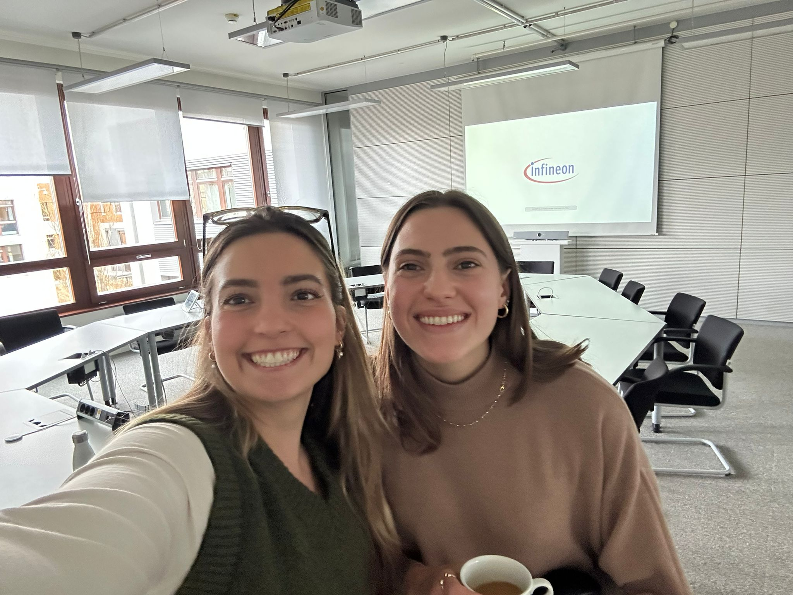

Project Study
GenAI Strategy for Marketing at Infineon
How can Generative AI be implemented in a successful and scalable way within a semiconductor marketing organization? In this project study, we developed a strategic roadmap for integrating Generative AI into marketing processes at Infineon based on employee interviews and workflow analysis.